Introduction to Milestone 4
For this milestone, we want to document our process for creating our demo.

What
Life As a Gym (LG) is a pair of intelligent Augmented Reality (AR) glasses that guide students throughout their day to fit in spontaneous bouts of exercise into their busy schedule.
How
It does this by being a personal guide with provided directional instructions and highlighting spontaneous moments of exercise the student can complete as they get to class. An example of the types of exercises it can suggest include; squats, stair steps, jumping-jacks, pull-ups, etc. In addition to showing moments of exercise, LG also gives the student an opportunity to take an alternate path which may burn more calories while still getting them to class on time. While recommending, LG is always cognizant of the student’s schedule and will always get the student on time, regardless if they exercise or not.High-Level Architecture
In sum, LG uses intelligent computer vision, machine learning and AR technology to recommend moments of exercise and alternative paths that the student can take. The exercises that LG recommends can be seen in the world as 3D objects that guide the user on how to complete those exercises. On the glasses, there are two cameras for each lens, a sensor array and GPS. LG is an intelligent system and connected to the student's account information, so it understands the student's schedule. Thus, it can map out in real time different paths the student can take and the respective caloric burn from those paths.
Privacy is an important factor in our concept. We chose to anonymize all of the data that the user shares with us in order to secure their data. We also minimize the type of information we collect and only collect the information that is the bare minimum to run the core features. For example, we don’t ask or collect information related to the user’s home location as this proves no use in the product.
This diagram, demonstrate that the LG glasses are connected with a variety of external sources such as, a database for exercises, routes, account information and 3rd party application data.
The Companion App
In addition to the creating the AR glasses, we wanted users to get the opportunity for an in-depth look at the activities and exercises they’ve been performing in the past month. It’s a convenient way to look at the activity stats that we’ve learned through our user-enactments. We learned that our users didn’t want to see those stats through the glasses because of the limited screen space. Therefore we’ve made it available on an additional app. This app can also be used for the first-use setup process.
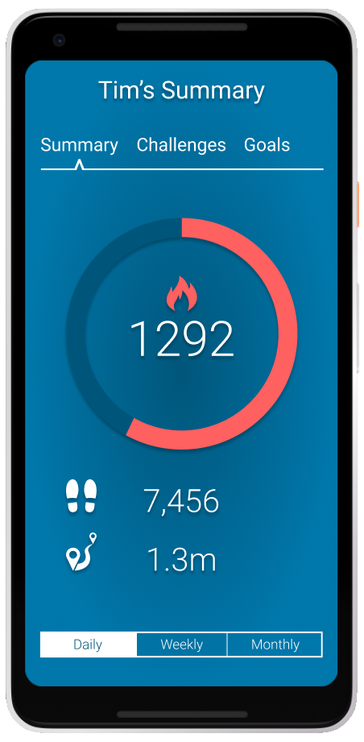 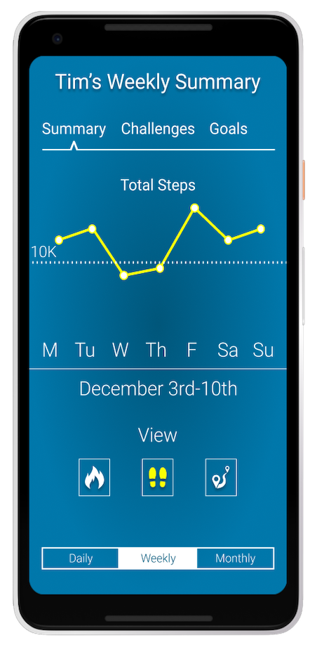Goals Of The Demo
For this demo, we wanted to focus on two areas.
- We want to demonstrate the feasibility of a pair of AR glasses by highlighting one use-case that future users can have.
- We want to demonstrate how users interact with the AR glasses. We want to showcase a user going through an ideal scenario of exercising on the way to class.
The Demo
For the demonstration, we will accomplish these goals by utilizing a few technical tools. First, we will use a framework called A-Frame, the backend of our system. A frame is a web-based VR framework, based on Javascript. It allows running a VR experience right in a browser window. In addition to this, we used an additional library call AR.js to add the AR layer and the ability to access the device camera. To demonstrate what the feel of using an AR headset, we use a Samsung Gear, a Virtual Reality Headset.
Although, we don't use the Samsung Gear for the full demo because we found it extremely restrictive to develop for it. So the Samsung Gear will primarily be used to demonstrate the look and feel. Therefore, we're using a Google Pixel smartphone and live streaming a first-person view of the interactions. We believe the demonstration will be a catalyst for further research and development to improve the experience.
After an introduction to the product and the user, we will demonstrate a set of activities that our end user might do. We are utilizing a wizard-of-oz methodology to augment the experience for the users and onlooking participants. In sum, our user is heading to class from their home while wearing their AR glasses. During this trip, they’ll do a set of exercises and activities that fit conveniently into their schedule. While our user is performing these tasks, we’ll be streaming what they see to a nearby TV/Monitor. To subside any confusion, our user will talk-aloud about their experience so audience members can see.
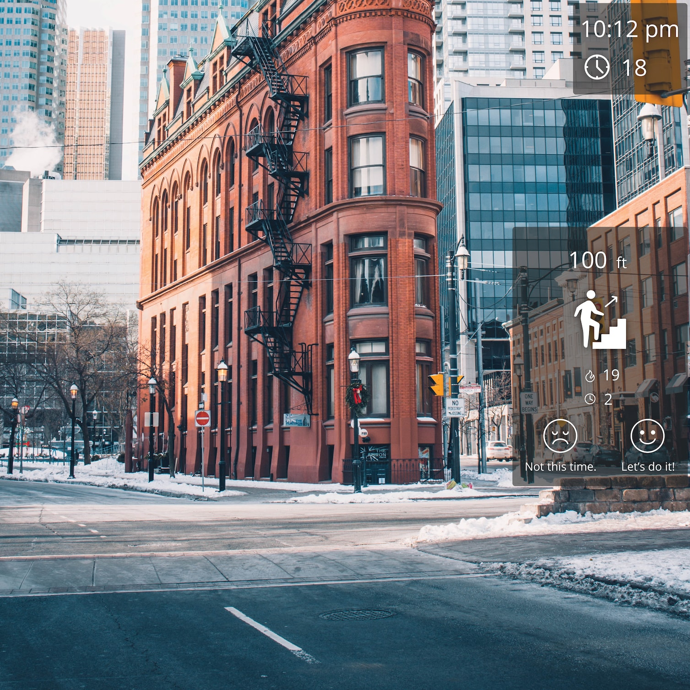The Process
In order to proceed efficiently with our demo, we divided the work based on everyone's skill-sets. Since the main component of our project includes an augmented reality experience, we knew that it will also be the most difficult piece of our project, especially with the limited amount of time available.
Then, we sought to create a minimally viable product (MVP) of our demo project. What this meant was; we quickly learned the VR framework, A-Frame to see if it was the right tool for our project. A-Frame was designed specifically for VR, but we were able to utilize an Android's phone camera as a source to simulate the world and then add elements onto the screen. This essentially created a makeshift AR experience.
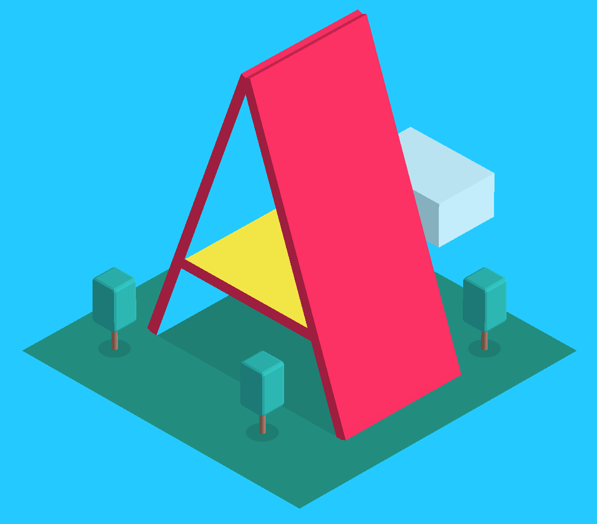 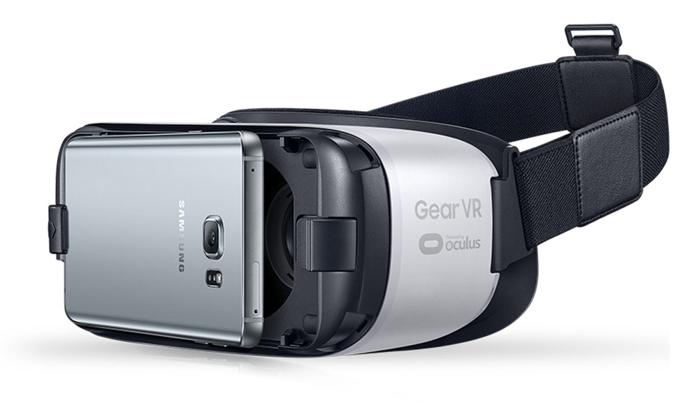After learning the framework we had to figure out how to add this experience to a pair of glasses. Luckily, one of the teammates had a Samsung Gear, which became useful because we were able to attach our phone to it.
After completing the MVP, we proceeded by creating a linear script for our user to follow. This then led to creating high fidelity UI elements and adding them to A-Frame. After completing the UI elements, script and being able to run a prototype on a Samsung Gear, the only thing left to do was to modify the demo experience by iterating on the design elements.
Demo’s Shortcomings
AR Formfactor
Although the concept covered the basic interactions of our concept, it came short to covering the ubiquitous factors. We had envisioned our product to follow a similar form factor as any other pair of bifocal glasses, with the added benefit of our AR technology. Since we used a Samsung Gear and A-Frame, our form factor deterred us from fully immersing our user in the AR experience. The primary fault of that is because there is a slight visual delay between what the user sees and reality. Additionally, the angular view from the Gear causes distortion which makes it difficult but not impossible to navigate freely.
Gear: Blessing and A Curse
Additionally, the Gear VR became an issue for a few reasons. The main reason is that the web browser is run within the Gear VR virtual environment, and that environment roots the browser in place. Thus, if you move too much, you can't see the browser window any longer. Secondly, we only had one phone compatible with the Gear VR, and that phone was old enough that it didn't work well when asked to run both Gear VR and the AR browser. For that reason, we will use the Gear VR only to show in-person demo attendees what the UI might feel like but will use just a phone for actual demo. We'll stream a live view from our app user to the demo area, to show what a use case for the app looks like from a first-person perspective.
Interactions
Furthermore, although in our early testing we had discovered that a lot of our participants interacted with our prototype using their voice, we were not able to implement voice interactivity into this demo. The limitations of this were primarily with our hardware and software used. This is why we employed a wizard-of-oz approach and had the screens cycle as our user completed objectives.
Short Of A Miracle
Also, our ambition to scan the environment and provide context suggestions and new exercise opportunities weren’t achieved. This was difficult to achieve with the current technology. The computer vision and machine learning requirement with high scalability don’t exist right now. In the future, when this technology becomes readily available, this feature could become extremely useful and be easily applied.
Early Feedback and Insights
Throughout our development process, we encountered insights that we thought we should mention.
Visual Acuity
First, when designing visual elements, it's needed that the elements have excellent visual acuity regardless of the environment. We've tested a mixture of diverse backdrops colors and transparencies in order to find the best combination regardless of the background conditions. We found that a transparent dark-grey background allowed the elements to stand out, despite the environment. Also, indicating selection choice is best marked with a light blue line and an accompanying glow.
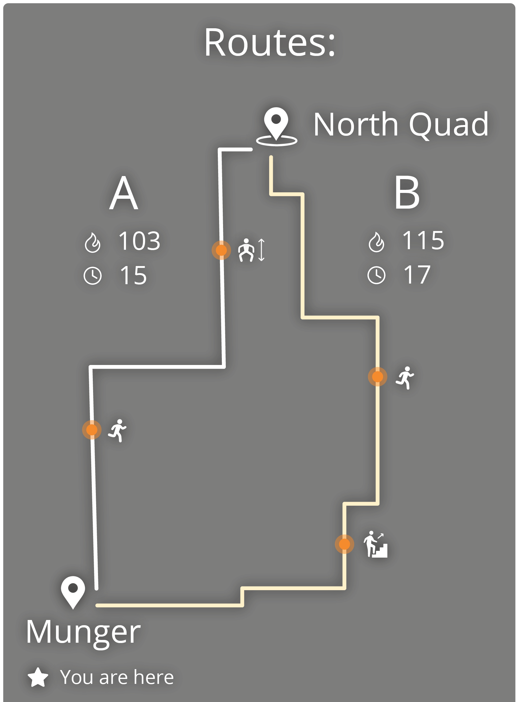 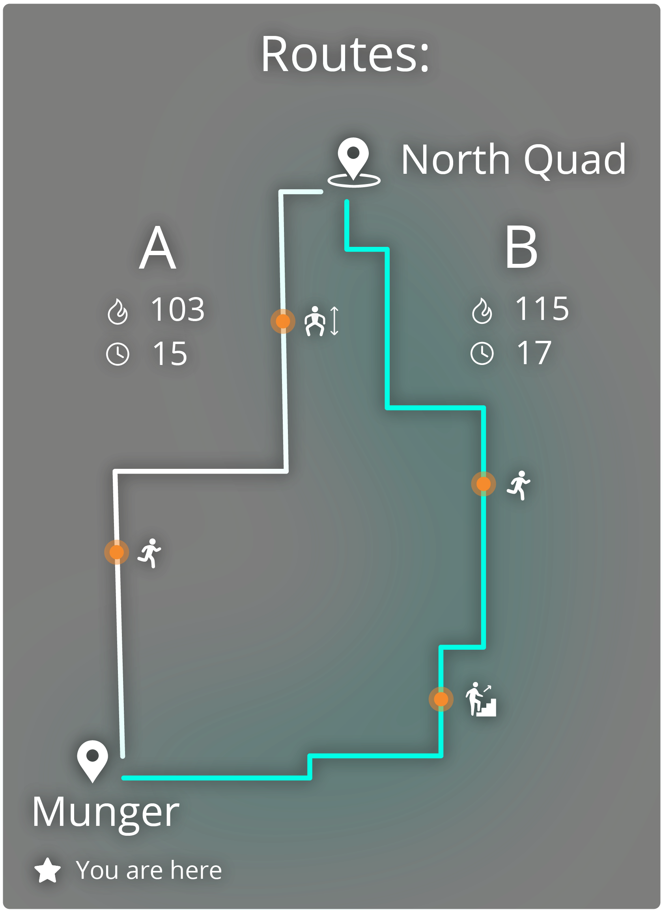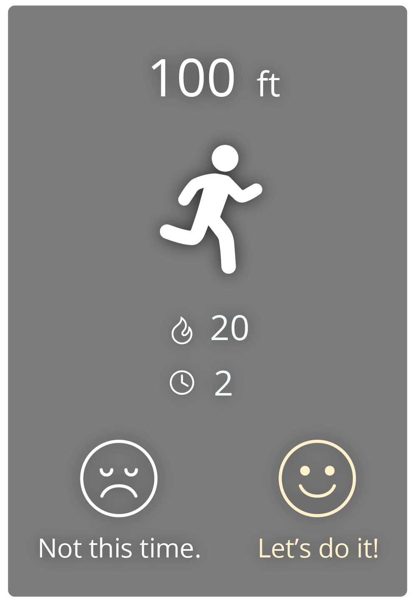 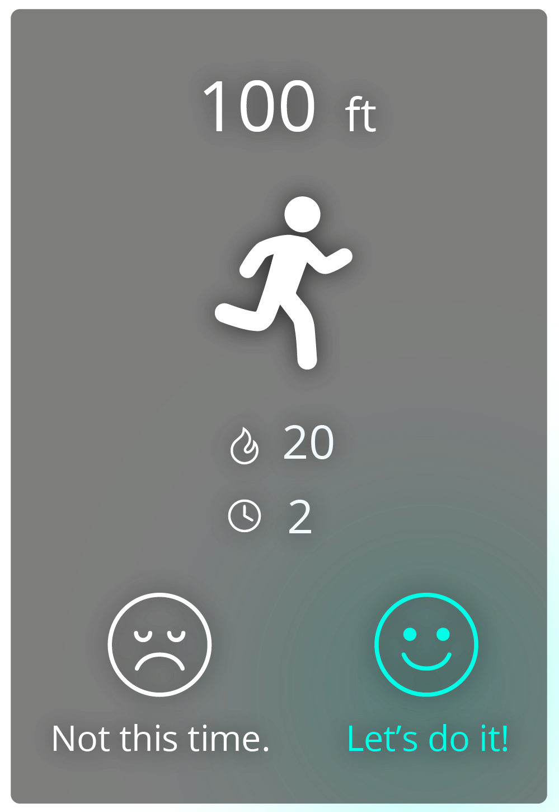
Peripheral Vision
Second, peripheral vision UI design also takes careful sizing and placement: Initially, our UI elements cluttered the central vision and made it difficult to see the background. We learned that it is important to move the elements to the side and avoid the central vision as much as possible. Also, it's important to modify the size and estimate how much space each element takes up, in order to balance the UI readability and the amount of vision that's obscured.
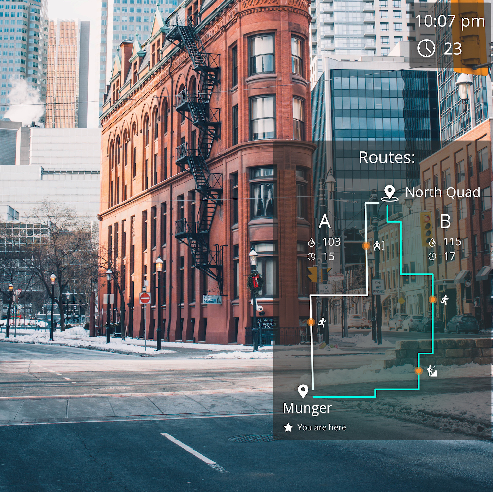Sound
Third, we also learned that, while testing, it was exceptionally easy to miss a notification or reminder from LG. To correct for this problem, we added an auditory reminder. An audio notification improved the situational awareness without making the screen more cluttered. The audio messages were specifically for the important notifications. 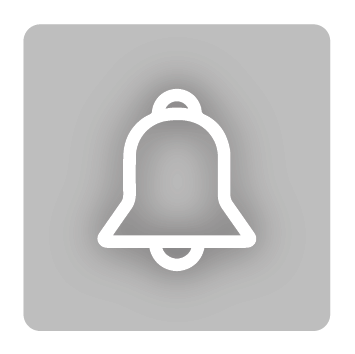